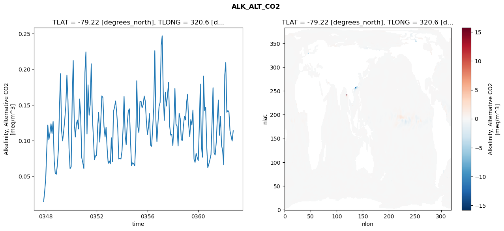
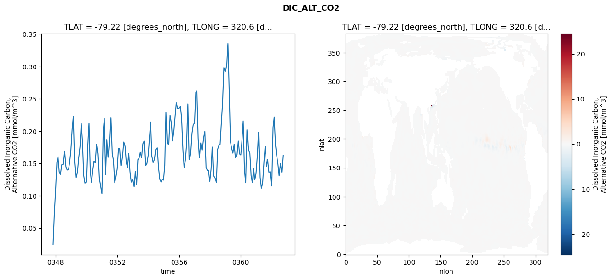
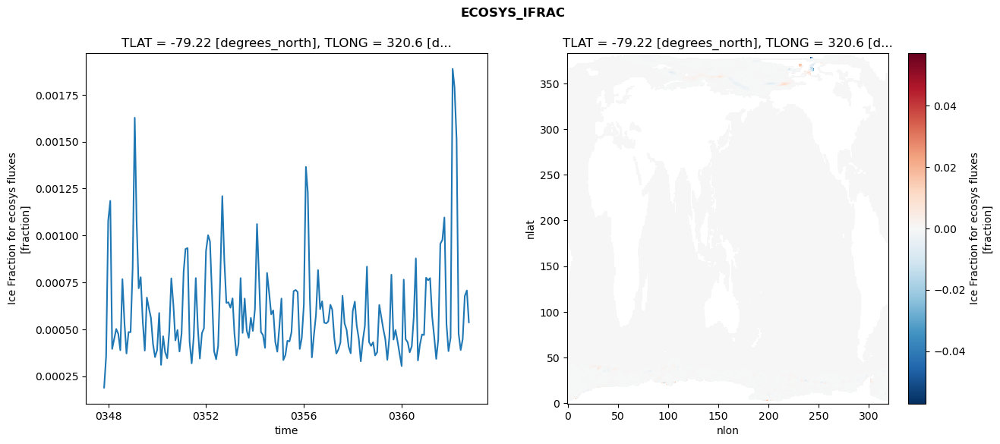
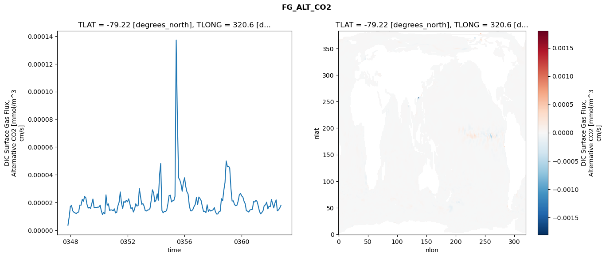

glb-dor_North_Atlantic_basin_029_1999-10-01_00119#
Simulation details#
Case: smyle.cdr-atlas-v0.glb-dor_North_Atlantic_basin_029_1999-10-01_00119.001
Basin: North_Atlantic_basin
Polygon: 29.0
Start date: 1999-10
Show code cell source Hide code cell source
import xarray as xr
import matplotlib.pyplot as plt
Show code cell source Hide code cell source
zarr_store = "/path/to/zarr/store"
# Parameters
zarr_store = "/global/cfs/projectdirs/m4746/Projects/Ocean-CDR-Atlas-v0/data/validation/smyle.cdr-atlas-v0.glb-dor_North_Atlantic_basin_029_1999-10-01_00119.001.validation.zarr"
Show code cell source Hide code cell source
%%time
ds_o = xr.open_zarr(zarr_store).compute()
ds_o
CPU times: user 621 ms, sys: 474 ms, total: 1.09 s
Wall time: 1.45 s
<xarray.Dataset> Size: 2MB
Dimensions: (nlat: 384, nlon: 320, time: 180)
Coordinates:
TLAT float64 8B -79.22
TLONG float64 8B 320.6
ULAT float64 8B -78.95
ULONG float64 8B 321.1
* time (time) object 1kB 0347-11-01 00:00:00 ... 0362-10-01 0...
z_t float32 4B 500.0
Dimensions without coordinates: nlat, nlon
Data variables:
ALK_ALT_CO2_diff (nlat, nlon) float32 492kB nan nan nan ... nan nan nan
ALK_ALT_CO2_rmse (time) float64 1kB 0.01445 0.0284 ... 0.09941 0.1138
DIC_ALT_CO2_diff (nlat, nlon) float32 492kB nan nan nan ... nan nan nan
DIC_ALT_CO2_rmse (time) float64 1kB 0.02474 0.07202 ... 0.1362 0.1628
ECOSYS_IFRAC_diff (nlat, nlon) float32 492kB nan nan nan ... nan nan nan
ECOSYS_IFRAC_rmse (time) float64 1kB 0.0001891 0.0003556 ... 0.000537
FG_ALT_CO2_diff (nlat, nlon) float32 492kB nan nan nan ... nan nan nan
FG_ALT_CO2_rmse (time) float64 1kB 3.586e-06 9.361e-06 ... 1.789e-05xarray.Dataset
- nlat: 384
- nlon: 320
- time: 180
- TLAT()float64-79.22
- long_name :
- array of t-grid latitudes
- units :
- degrees_north
array(-79.22052261)
- TLONG()float64320.6
- long_name :
- array of t-grid longitudes
- units :
- degrees_east
array(320.56250892)
- ULAT()float64-78.95
- long_name :
- array of u-grid latitudes
- units :
- degrees_north
array(-78.95289509)
- ULONG()float64321.1
- long_name :
- array of u-grid longitudes
- units :
- degrees_east
array(321.12500894)
- time(time)object0347-11-01 00:00:00 ... 0362-10-...
- bounds :
- time_bound
- long_name :
- time
array([cftime.DatetimeNoLeap(347, 11, 1, 0, 0, 0, 0, has_year_zero=True), cftime.DatetimeNoLeap(347, 12, 1, 0, 0, 0, 0, has_year_zero=True), cftime.DatetimeNoLeap(348, 1, 1, 0, 0, 0, 0, has_year_zero=True), cftime.DatetimeNoLeap(348, 2, 1, 0, 0, 0, 0, has_year_zero=True), cftime.DatetimeNoLeap(348, 3, 1, 0, 0, 0, 0, has_year_zero=True), cftime.DatetimeNoLeap(348, 4, 1, 0, 0, 0, 0, has_year_zero=True), cftime.DatetimeNoLeap(348, 5, 1, 0, 0, 0, 0, has_year_zero=True), cftime.DatetimeNoLeap(348, 6, 1, 0, 0, 0, 0, has_year_zero=True), cftime.DatetimeNoLeap(348, 7, 1, 0, 0, 0, 0, has_year_zero=True), cftime.DatetimeNoLeap(348, 8, 1, 0, 0, 0, 0, has_year_zero=True), cftime.DatetimeNoLeap(348, 9, 1, 0, 0, 0, 0, has_year_zero=True), cftime.DatetimeNoLeap(348, 10, 1, 0, 0, 0, 0, has_year_zero=True), cftime.DatetimeNoLeap(348, 11, 1, 0, 0, 0, 0, has_year_zero=True), cftime.DatetimeNoLeap(348, 12, 1, 0, 0, 0, 0, has_year_zero=True), cftime.DatetimeNoLeap(349, 1, 1, 0, 0, 0, 0, has_year_zero=True), cftime.DatetimeNoLeap(349, 2, 1, 0, 0, 0, 0, has_year_zero=True), cftime.DatetimeNoLeap(349, 3, 1, 0, 0, 0, 0, has_year_zero=True), cftime.DatetimeNoLeap(349, 4, 1, 0, 0, 0, 0, has_year_zero=True), cftime.DatetimeNoLeap(349, 5, 1, 0, 0, 0, 0, has_year_zero=True), cftime.DatetimeNoLeap(349, 6, 1, 0, 0, 0, 0, has_year_zero=True), cftime.DatetimeNoLeap(349, 7, 1, 0, 0, 0, 0, has_year_zero=True), cftime.DatetimeNoLeap(349, 8, 1, 0, 0, 0, 0, has_year_zero=True), cftime.DatetimeNoLeap(349, 9, 1, 0, 0, 0, 0, has_year_zero=True), cftime.DatetimeNoLeap(349, 10, 1, 0, 0, 0, 0, has_year_zero=True), cftime.DatetimeNoLeap(349, 11, 1, 0, 0, 0, 0, has_year_zero=True), cftime.DatetimeNoLeap(349, 12, 1, 0, 0, 0, 0, has_year_zero=True), cftime.DatetimeNoLeap(350, 1, 1, 0, 0, 0, 0, has_year_zero=True), cftime.DatetimeNoLeap(350, 2, 1, 0, 0, 0, 0, has_year_zero=True), cftime.DatetimeNoLeap(350, 3, 1, 0, 0, 0, 0, has_year_zero=True), cftime.DatetimeNoLeap(350, 4, 1, 0, 0, 0, 0, has_year_zero=True), cftime.DatetimeNoLeap(350, 5, 1, 0, 0, 0, 0, has_year_zero=True), cftime.DatetimeNoLeap(350, 6, 1, 0, 0, 0, 0, has_year_zero=True), cftime.DatetimeNoLeap(350, 7, 1, 0, 0, 0, 0, has_year_zero=True), cftime.DatetimeNoLeap(350, 8, 1, 0, 0, 0, 0, has_year_zero=True), cftime.DatetimeNoLeap(350, 9, 1, 0, 0, 0, 0, has_year_zero=True), cftime.DatetimeNoLeap(350, 10, 1, 0, 0, 0, 0, has_year_zero=True), cftime.DatetimeNoLeap(350, 11, 1, 0, 0, 0, 0, has_year_zero=True), cftime.DatetimeNoLeap(350, 12, 1, 0, 0, 0, 0, has_year_zero=True), cftime.DatetimeNoLeap(351, 1, 1, 0, 0, 0, 0, has_year_zero=True), cftime.DatetimeNoLeap(351, 2, 1, 0, 0, 0, 0, has_year_zero=True), cftime.DatetimeNoLeap(351, 3, 1, 0, 0, 0, 0, has_year_zero=True), cftime.DatetimeNoLeap(351, 4, 1, 0, 0, 0, 0, has_year_zero=True), cftime.DatetimeNoLeap(351, 5, 1, 0, 0, 0, 0, has_year_zero=True), cftime.DatetimeNoLeap(351, 6, 1, 0, 0, 0, 0, has_year_zero=True), cftime.DatetimeNoLeap(351, 7, 1, 0, 0, 0, 0, has_year_zero=True), cftime.DatetimeNoLeap(351, 8, 1, 0, 0, 0, 0, has_year_zero=True), cftime.DatetimeNoLeap(351, 9, 1, 0, 0, 0, 0, has_year_zero=True), cftime.DatetimeNoLeap(351, 10, 1, 0, 0, 0, 0, has_year_zero=True), cftime.DatetimeNoLeap(351, 11, 1, 0, 0, 0, 0, has_year_zero=True), cftime.DatetimeNoLeap(351, 12, 1, 0, 0, 0, 0, has_year_zero=True), cftime.DatetimeNoLeap(352, 1, 1, 0, 0, 0, 0, has_year_zero=True), cftime.DatetimeNoLeap(352, 2, 1, 0, 0, 0, 0, has_year_zero=True), cftime.DatetimeNoLeap(352, 3, 1, 0, 0, 0, 0, has_year_zero=True), cftime.DatetimeNoLeap(352, 4, 1, 0, 0, 0, 0, has_year_zero=True), cftime.DatetimeNoLeap(352, 5, 1, 0, 0, 0, 0, has_year_zero=True), cftime.DatetimeNoLeap(352, 6, 1, 0, 0, 0, 0, has_year_zero=True), cftime.DatetimeNoLeap(352, 7, 1, 0, 0, 0, 0, has_year_zero=True), cftime.DatetimeNoLeap(352, 8, 1, 0, 0, 0, 0, has_year_zero=True), cftime.DatetimeNoLeap(352, 9, 1, 0, 0, 0, 0, has_year_zero=True), cftime.DatetimeNoLeap(352, 10, 1, 0, 0, 0, 0, has_year_zero=True), cftime.DatetimeNoLeap(352, 11, 1, 0, 0, 0, 0, has_year_zero=True), cftime.DatetimeNoLeap(352, 12, 1, 0, 0, 0, 0, has_year_zero=True), cftime.DatetimeNoLeap(353, 1, 1, 0, 0, 0, 0, has_year_zero=True), cftime.DatetimeNoLeap(353, 2, 1, 0, 0, 0, 0, has_year_zero=True), cftime.DatetimeNoLeap(353, 3, 1, 0, 0, 0, 0, has_year_zero=True), cftime.DatetimeNoLeap(353, 4, 1, 0, 0, 0, 0, has_year_zero=True), cftime.DatetimeNoLeap(353, 5, 1, 0, 0, 0, 0, has_year_zero=True), cftime.DatetimeNoLeap(353, 6, 1, 0, 0, 0, 0, has_year_zero=True), cftime.DatetimeNoLeap(353, 7, 1, 0, 0, 0, 0, has_year_zero=True), cftime.DatetimeNoLeap(353, 8, 1, 0, 0, 0, 0, has_year_zero=True), cftime.DatetimeNoLeap(353, 9, 1, 0, 0, 0, 0, has_year_zero=True), cftime.DatetimeNoLeap(353, 10, 1, 0, 0, 0, 0, has_year_zero=True), cftime.DatetimeNoLeap(353, 11, 1, 0, 0, 0, 0, has_year_zero=True), cftime.DatetimeNoLeap(353, 12, 1, 0, 0, 0, 0, has_year_zero=True), cftime.DatetimeNoLeap(354, 1, 1, 0, 0, 0, 0, has_year_zero=True), cftime.DatetimeNoLeap(354, 2, 1, 0, 0, 0, 0, has_year_zero=True), cftime.DatetimeNoLeap(354, 3, 1, 0, 0, 0, 0, has_year_zero=True), cftime.DatetimeNoLeap(354, 4, 1, 0, 0, 0, 0, has_year_zero=True), cftime.DatetimeNoLeap(354, 5, 1, 0, 0, 0, 0, has_year_zero=True), cftime.DatetimeNoLeap(354, 6, 1, 0, 0, 0, 0, has_year_zero=True), cftime.DatetimeNoLeap(354, 7, 1, 0, 0, 0, 0, has_year_zero=True), cftime.DatetimeNoLeap(354, 8, 1, 0, 0, 0, 0, has_year_zero=True), cftime.DatetimeNoLeap(354, 9, 1, 0, 0, 0, 0, has_year_zero=True), cftime.DatetimeNoLeap(354, 10, 1, 0, 0, 0, 0, has_year_zero=True), cftime.DatetimeNoLeap(354, 11, 1, 0, 0, 0, 0, has_year_zero=True), cftime.DatetimeNoLeap(354, 12, 1, 0, 0, 0, 0, has_year_zero=True), cftime.DatetimeNoLeap(355, 1, 1, 0, 0, 0, 0, has_year_zero=True), cftime.DatetimeNoLeap(355, 2, 1, 0, 0, 0, 0, has_year_zero=True), cftime.DatetimeNoLeap(355, 3, 1, 0, 0, 0, 0, has_year_zero=True), cftime.DatetimeNoLeap(355, 4, 1, 0, 0, 0, 0, has_year_zero=True), cftime.DatetimeNoLeap(355, 5, 1, 0, 0, 0, 0, has_year_zero=True), cftime.DatetimeNoLeap(355, 6, 1, 0, 0, 0, 0, has_year_zero=True), cftime.DatetimeNoLeap(355, 7, 1, 0, 0, 0, 0, has_year_zero=True), cftime.DatetimeNoLeap(355, 8, 1, 0, 0, 0, 0, has_year_zero=True), cftime.DatetimeNoLeap(355, 9, 1, 0, 0, 0, 0, has_year_zero=True), cftime.DatetimeNoLeap(355, 10, 1, 0, 0, 0, 0, has_year_zero=True), cftime.DatetimeNoLeap(355, 11, 1, 0, 0, 0, 0, has_year_zero=True), cftime.DatetimeNoLeap(355, 12, 1, 0, 0, 0, 0, has_year_zero=True), cftime.DatetimeNoLeap(356, 1, 1, 0, 0, 0, 0, has_year_zero=True), cftime.DatetimeNoLeap(356, 2, 1, 0, 0, 0, 0, has_year_zero=True), cftime.DatetimeNoLeap(356, 3, 1, 0, 0, 0, 0, has_year_zero=True), cftime.DatetimeNoLeap(356, 4, 1, 0, 0, 0, 0, has_year_zero=True), cftime.DatetimeNoLeap(356, 5, 1, 0, 0, 0, 0, has_year_zero=True), cftime.DatetimeNoLeap(356, 6, 1, 0, 0, 0, 0, has_year_zero=True), cftime.DatetimeNoLeap(356, 7, 1, 0, 0, 0, 0, has_year_zero=True), cftime.DatetimeNoLeap(356, 8, 1, 0, 0, 0, 0, has_year_zero=True), cftime.DatetimeNoLeap(356, 9, 1, 0, 0, 0, 0, has_year_zero=True), cftime.DatetimeNoLeap(356, 10, 1, 0, 0, 0, 0, has_year_zero=True), cftime.DatetimeNoLeap(356, 11, 1, 0, 0, 0, 0, has_year_zero=True), cftime.DatetimeNoLeap(356, 12, 1, 0, 0, 0, 0, has_year_zero=True), cftime.DatetimeNoLeap(357, 1, 1, 0, 0, 0, 0, has_year_zero=True), cftime.DatetimeNoLeap(357, 2, 1, 0, 0, 0, 0, has_year_zero=True), cftime.DatetimeNoLeap(357, 3, 1, 0, 0, 0, 0, has_year_zero=True), cftime.DatetimeNoLeap(357, 4, 1, 0, 0, 0, 0, has_year_zero=True), cftime.DatetimeNoLeap(357, 5, 1, 0, 0, 0, 0, has_year_zero=True), cftime.DatetimeNoLeap(357, 6, 1, 0, 0, 0, 0, has_year_zero=True), cftime.DatetimeNoLeap(357, 7, 1, 0, 0, 0, 0, has_year_zero=True), cftime.DatetimeNoLeap(357, 8, 1, 0, 0, 0, 0, has_year_zero=True), cftime.DatetimeNoLeap(357, 9, 1, 0, 0, 0, 0, has_year_zero=True), cftime.DatetimeNoLeap(357, 10, 1, 0, 0, 0, 0, has_year_zero=True), cftime.DatetimeNoLeap(357, 11, 1, 0, 0, 0, 0, has_year_zero=True), cftime.DatetimeNoLeap(357, 12, 1, 0, 0, 0, 0, has_year_zero=True), cftime.DatetimeNoLeap(358, 1, 1, 0, 0, 0, 0, has_year_zero=True), cftime.DatetimeNoLeap(358, 2, 1, 0, 0, 0, 0, has_year_zero=True), cftime.DatetimeNoLeap(358, 3, 1, 0, 0, 0, 0, has_year_zero=True), cftime.DatetimeNoLeap(358, 4, 1, 0, 0, 0, 0, has_year_zero=True), cftime.DatetimeNoLeap(358, 5, 1, 0, 0, 0, 0, has_year_zero=True), cftime.DatetimeNoLeap(358, 6, 1, 0, 0, 0, 0, has_year_zero=True), cftime.DatetimeNoLeap(358, 7, 1, 0, 0, 0, 0, has_year_zero=True), cftime.DatetimeNoLeap(358, 8, 1, 0, 0, 0, 0, has_year_zero=True), cftime.DatetimeNoLeap(358, 9, 1, 0, 0, 0, 0, has_year_zero=True), cftime.DatetimeNoLeap(358, 10, 1, 0, 0, 0, 0, has_year_zero=True), cftime.DatetimeNoLeap(358, 11, 1, 0, 0, 0, 0, has_year_zero=True), cftime.DatetimeNoLeap(358, 12, 1, 0, 0, 0, 0, has_year_zero=True), cftime.DatetimeNoLeap(359, 1, 1, 0, 0, 0, 0, has_year_zero=True), cftime.DatetimeNoLeap(359, 2, 1, 0, 0, 0, 0, has_year_zero=True), cftime.DatetimeNoLeap(359, 3, 1, 0, 0, 0, 0, has_year_zero=True), cftime.DatetimeNoLeap(359, 4, 1, 0, 0, 0, 0, has_year_zero=True), cftime.DatetimeNoLeap(359, 5, 1, 0, 0, 0, 0, has_year_zero=True), cftime.DatetimeNoLeap(359, 6, 1, 0, 0, 0, 0, has_year_zero=True), cftime.DatetimeNoLeap(359, 7, 1, 0, 0, 0, 0, has_year_zero=True), cftime.DatetimeNoLeap(359, 8, 1, 0, 0, 0, 0, has_year_zero=True), cftime.DatetimeNoLeap(359, 9, 1, 0, 0, 0, 0, has_year_zero=True), cftime.DatetimeNoLeap(359, 10, 1, 0, 0, 0, 0, has_year_zero=True), cftime.DatetimeNoLeap(359, 11, 1, 0, 0, 0, 0, has_year_zero=True), cftime.DatetimeNoLeap(359, 12, 1, 0, 0, 0, 0, has_year_zero=True), cftime.DatetimeNoLeap(360, 1, 1, 0, 0, 0, 0, has_year_zero=True), cftime.DatetimeNoLeap(360, 2, 1, 0, 0, 0, 0, has_year_zero=True), cftime.DatetimeNoLeap(360, 3, 1, 0, 0, 0, 0, has_year_zero=True), cftime.DatetimeNoLeap(360, 4, 1, 0, 0, 0, 0, has_year_zero=True), cftime.DatetimeNoLeap(360, 5, 1, 0, 0, 0, 0, has_year_zero=True), cftime.DatetimeNoLeap(360, 6, 1, 0, 0, 0, 0, has_year_zero=True), cftime.DatetimeNoLeap(360, 7, 1, 0, 0, 0, 0, has_year_zero=True), cftime.DatetimeNoLeap(360, 8, 1, 0, 0, 0, 0, has_year_zero=True), cftime.DatetimeNoLeap(360, 9, 1, 0, 0, 0, 0, has_year_zero=True), cftime.DatetimeNoLeap(360, 10, 1, 0, 0, 0, 0, has_year_zero=True), cftime.DatetimeNoLeap(360, 11, 1, 0, 0, 0, 0, has_year_zero=True), cftime.DatetimeNoLeap(360, 12, 1, 0, 0, 0, 0, has_year_zero=True), cftime.DatetimeNoLeap(361, 1, 1, 0, 0, 0, 0, has_year_zero=True), cftime.DatetimeNoLeap(361, 2, 1, 0, 0, 0, 0, has_year_zero=True), cftime.DatetimeNoLeap(361, 3, 1, 0, 0, 0, 0, has_year_zero=True), cftime.DatetimeNoLeap(361, 4, 1, 0, 0, 0, 0, has_year_zero=True), cftime.DatetimeNoLeap(361, 5, 1, 0, 0, 0, 0, has_year_zero=True), cftime.DatetimeNoLeap(361, 6, 1, 0, 0, 0, 0, has_year_zero=True), cftime.DatetimeNoLeap(361, 7, 1, 0, 0, 0, 0, has_year_zero=True), cftime.DatetimeNoLeap(361, 8, 1, 0, 0, 0, 0, has_year_zero=True), cftime.DatetimeNoLeap(361, 9, 1, 0, 0, 0, 0, has_year_zero=True), cftime.DatetimeNoLeap(361, 10, 1, 0, 0, 0, 0, has_year_zero=True), cftime.DatetimeNoLeap(361, 11, 1, 0, 0, 0, 0, has_year_zero=True), cftime.DatetimeNoLeap(361, 12, 1, 0, 0, 0, 0, has_year_zero=True), cftime.DatetimeNoLeap(362, 1, 1, 0, 0, 0, 0, has_year_zero=True), cftime.DatetimeNoLeap(362, 2, 1, 0, 0, 0, 0, has_year_zero=True), cftime.DatetimeNoLeap(362, 3, 1, 0, 0, 0, 0, has_year_zero=True), cftime.DatetimeNoLeap(362, 4, 1, 0, 0, 0, 0, has_year_zero=True), cftime.DatetimeNoLeap(362, 5, 1, 0, 0, 0, 0, has_year_zero=True), cftime.DatetimeNoLeap(362, 6, 1, 0, 0, 0, 0, has_year_zero=True), cftime.DatetimeNoLeap(362, 7, 1, 0, 0, 0, 0, has_year_zero=True), cftime.DatetimeNoLeap(362, 8, 1, 0, 0, 0, 0, has_year_zero=True), cftime.DatetimeNoLeap(362, 9, 1, 0, 0, 0, 0, has_year_zero=True), cftime.DatetimeNoLeap(362, 10, 1, 0, 0, 0, 0, has_year_zero=True)], dtype=object) - z_t()float32500.0
- long_name :
- depth from surface to midpoint of layer
- positive :
- down
- units :
- centimeters
- valid_max :
- 537500.0
- valid_min :
- 500.0
array(500., dtype=float32)
- ALK_ALT_CO2_diff(nlat, nlon)float32nan nan nan nan ... nan nan nan nan
- cell_methods :
- time: mean
- grid_loc :
- 3111
- long_name :
- Alkalinity, Alternative CO2
- units :
- meq/m^3
array([[ nan, nan, nan, ..., nan, nan, nan], [ nan, nan, nan, ..., nan, nan, nan], [0.16674805, 0.05615234, 0.01293945, ..., nan, nan, nan], ..., [ nan, nan, nan, ..., nan, nan, nan], [ nan, nan, nan, ..., nan, nan, nan], [ nan, nan, nan, ..., nan, nan, nan]], dtype=float32) - ALK_ALT_CO2_rmse(time)float640.01445 0.0284 ... 0.09941 0.1138
- cell_methods :
- time: mean
- grid_loc :
- 3111
- long_name :
- Alkalinity, Alternative CO2
- units :
- meq/m^3
array([0.01445429, 0.02839585, 0.04740435, 0.08913983, 0.12183399, 0.10109118, 0.11026593, 0.12361996, 0.10996107, 0.1267072 , 0.07225357, 0.0544018 , 0.05291191, 0.06604516, 0.08902409, 0.14894575, 0.19378484, 0.1138389 , 0.09966698, 0.11370486, 0.1292808 , 0.14918099, 0.19180916, 0.15689189, 0.08912688, 0.06075933, 0.06334494, 0.16041857, 0.21221532, 0.12419341, 0.10507301, 0.1238609 , 0.12888266, 0.1163288 , 0.15834721, 0.13611013, 0.07610595, 0.06905962, 0.06089778, 0.19551513, 0.22432974, 0.10919111, 0.17808676, 0.13555495, 0.15061581, 0.20763439, 0.13411372, 0.10487289, 0.07329931, 0.07876379, 0.07889053, 0.11905822, 0.13961987, 0.09802558, 0.1259444 , 0.16267405, 0.16029452, 0.12051907, 0.10508211, 0.11867459, 0.08825478, 0.06808495, 0.07153762, 0.06732299, 0.10391131, 0.07019743, 0.14093296, 0.14662896, 0.15561627, 0.13965131, 0.11760945, 0.07427617, 0.07524415, 0.07425854, 0.0854627 , 0.11760475, 0.16180414, 0.10765731, 0.09413891, 0.12422133, 0.14127472, 0.14458944, 0.1015028 , 0.06492338, 0.06887798, 0.06784479, 0.0646179 , 0.09943973, 0.18388179, 0.11935929, 0.11098083, 0.15477401, 0.15523512, 0.14584669, 0.15046864, 0.16238472, 0.15514315, 0.12811489, 0.10844079, 0.11909629, 0.13771139, 0.09380261, 0.09192638, 0.11755715, 0.1465624 , 0.22608201, 0.12873239, 0.09858601, 0.12578386, 0.14776965, 0.15370276, 0.23343367, 0.24683881, 0.16558319, 0.12838499, 0.16771312, 0.14844549, 0.16402452, 0.18181334, 0.12071305, 0.10767719, 0.10888836, 0.09302603, 0.1245108 , 0.17310194, 0.12290339, 0.12058704, 0.09259543, 0.13827313, 0.13081997, 0.1010876 , 0.10040116, 0.12069886, 0.13439677, 0.12905152, 0.15408294, 0.16492065, 0.12222157, 0.10555836, 0.12948271, 0.12192372, 0.1428502 , 0.07398488, 0.06953714, 0.08222063, 0.07648557, 0.07194683, 0.12182051, 0.17932623, 0.09332185, 0.07680649, 0.19042558, 0.1421742 , 0.146667 , 0.09149511, 0.06219758, 0.06733383, 0.07321849, 0.08039077, 0.12657705, 0.17410808, 0.08281367, 0.07989499, 0.0972984 , 0.12965164, 0.15676124, 0.10741718, 0.13388566, 0.09315431, 0.08624601, 0.06625578, 0.19191067, 0.20940515, 0.13966848, 0.14219427, 0.14020428, 0.11390536, 0.10646562, 0.09941375, 0.11377924]) - DIC_ALT_CO2_diff(nlat, nlon)float32nan nan nan nan ... nan nan nan nan
- cell_methods :
- time: mean
- grid_loc :
- 3111
- long_name :
- Dissolved Inorganic Carbon, Alternative CO2
- units :
- mmol/m^3
array([[ nan, nan, nan, ..., nan, nan, nan], [ nan, nan, nan, ..., nan, nan, nan], [0.14941406, 0.05371094, 0.0090332 , ..., nan, nan, nan], ..., [ nan, nan, nan, ..., nan, nan, nan], [ nan, nan, nan, ..., nan, nan, nan], [ nan, nan, nan, ..., nan, nan, nan]], dtype=float32) - DIC_ALT_CO2_rmse(time)float640.02474 0.07202 ... 0.1362 0.1628
- cell_methods :
- time: mean
- grid_loc :
- 3111
- long_name :
- Dissolved Inorganic Carbon, Alternative CO2
- units :
- mmol/m^3
array([0.02474405, 0.07201885, 0.10945263, 0.15128659, 0.16081978, 0.1363326 , 0.13335622, 0.14808362, 0.14877037, 0.16889101, 0.14488228, 0.13967498, 0.14006571, 0.15123726, 0.17010082, 0.20331152, 0.22227832, 0.15160349, 0.12835 , 0.13697072, 0.15883528, 0.17551161, 0.21251478, 0.18463339, 0.13153043, 0.11925698, 0.12116791, 0.17915342, 0.21264211, 0.13778029, 0.12067959, 0.13865652, 0.15323649, 0.15124669, 0.17953125, 0.16503832, 0.12600181, 0.11498502, 0.10299657, 0.19911589, 0.21971631, 0.13289156, 0.18660545, 0.15936916, 0.18099932, 0.22068171, 0.16555294, 0.15426177, 0.11981733, 0.12915011, 0.14115434, 0.17315944, 0.17300937, 0.14662247, 0.16053324, 0.18328441, 0.17748221, 0.15134667, 0.14390264, 0.16576902, 0.13676146, 0.12091314, 0.12458692, 0.11416577, 0.13761588, 0.1172385 , 0.15564828, 0.15794861, 0.16751387, 0.15877111, 0.18042025, 0.18469494, 0.14671313, 0.15020447, 0.16276139, 0.19071185, 0.21407102, 0.16108222, 0.15158374, 0.1555846 , 0.17103332, 0.17395335, 0.1431073 , 0.12541328, 0.12115664, 0.12589306, 0.12416986, 0.14650189, 0.2289979 , 0.18062605, 0.17971828, 0.22431248, 0.21303124, 0.18496697, 0.1988481 , 0.22145407, 0.24357192, 0.23513079, 0.23541123, 0.23820494, 0.21918933, 0.17133877, 0.14331959, 0.15460152, 0.17890181, 0.24181022, 0.15591039, 0.16580928, 0.19688422, 0.20973598, 0.21224732, 0.25990472, 0.26175169, 0.1886503 , 0.15855463, 0.18178933, 0.17050082, 0.18871841, 0.19949982, 0.14379327, 0.1390507 , 0.13867576, 0.12211308, 0.14087022, 0.1751678 , 0.13068432, 0.12758024, 0.12064198, 0.1712613 , 0.17852554, 0.17963543, 0.2111137 , 0.24492079, 0.29758621, 0.29242198, 0.30178066, 0.33553759, 0.2620455 , 0.18400446, 0.17320673, 0.16606929, 0.17980525, 0.15844543, 0.16390625, 0.18483005, 0.16492067, 0.16315106, 0.18738924, 0.21581199, 0.1404166 , 0.1199317 , 0.20214907, 0.17081876, 0.16626682, 0.13126087, 0.11999651, 0.1426951 , 0.12442282, 0.13495582, 0.16163599, 0.19803904, 0.12855695, 0.11185884, 0.11988348, 0.15091315, 0.17633186, 0.14513599, 0.15611549, 0.13615087, 0.13678007, 0.11546058, 0.20514125, 0.22161528, 0.17876429, 0.16211038, 0.1495953 , 0.13092899, 0.1497007 , 0.13615061, 0.16277813]) - ECOSYS_IFRAC_diff(nlat, nlon)float32nan nan nan nan ... nan nan nan nan
- cell_methods :
- time: mean
- grid_loc :
- 2110
- long_name :
- Ice Fraction for ecosys fluxes
- units :
- fraction
array([[ nan, nan, nan, ..., nan, nan, nan], [ nan, nan, nan, ..., nan, nan, nan], [-1.0728836e-06, -2.9206276e-06, 2.3841858e-07, ..., nan, nan, nan], ..., [ nan, nan, nan, ..., nan, nan, nan], [ nan, nan, nan, ..., nan, nan, nan], [ nan, nan, nan, ..., nan, nan, nan]], dtype=float32) - ECOSYS_IFRAC_rmse(time)float640.0001891 0.0003556 ... 0.000537
- cell_methods :
- time: mean
- grid_loc :
- 2110
- long_name :
- Ice Fraction for ecosys fluxes
- units :
- fraction
array([0.00018907, 0.00035556, 0.0010796 , 0.0011844 , 0.00039533, 0.0004496 , 0.00050183, 0.00047488, 0.00038826, 0.00076727, 0.00053314, 0.00037116, 0.00048523, 0.00048454, 0.00082779, 0.00162742, 0.00107632, 0.00071842, 0.00077757, 0.00054023, 0.00038657, 0.00066897, 0.00061081, 0.00056055, 0.00042121, 0.00035165, 0.0003894 , 0.00058691, 0.00031012, 0.00046272, 0.00037742, 0.00034556, 0.00048794, 0.00077141, 0.00062995, 0.00044094, 0.00049604, 0.00038136, 0.0004763 , 0.00080781, 0.00092781, 0.00093262, 0.0004324 , 0.0003183 , 0.00045916, 0.00077294, 0.00050814, 0.00034395, 0.00047948, 0.00050516, 0.00091725, 0.0010014 , 0.00096822, 0.00067821, 0.00038409, 0.00034005, 0.00041158, 0.00076647, 0.00120953, 0.00086756, 0.00064053, 0.00064396, 0.00061506, 0.00066474, 0.00047759, 0.00036077, 0.00042125, 0.00077276, 0.00048078, 0.00066361, 0.00049256, 0.00045438, 0.00056079, 0.00049135, 0.00060774, 0.00106083, 0.00080063, 0.00048537, 0.00046935, 0.00040088, 0.00080047, 0.00069537, 0.00057953, 0.00060092, 0.00043304, 0.00038056, 0.00051305, 0.00066382, 0.00033588, 0.00036284, 0.00043855, 0.00043566, 0.00048503, 0.00070309, 0.00070945, 0.00069852, 0.00039536, 0.00045299, 0.00063088, 0.00136505, 0.00122961, 0.00066524, 0.00035005, 0.00047064, 0.00057655, 0.00081534, 0.00060756, 0.00064899, 0.00053546, 0.00053123, 0.00054224, 0.00063059, 0.00060451, 0.00045142, 0.00037065, 0.00039241, 0.00042888, 0.00067834, 0.00053127, 0.00049782, 0.00040685, 0.00037216, 0.00059689, 0.00064737, 0.00051995, 0.00044974, 0.00032942, 0.00044236, 0.00051843, 0.0008342 , 0.00043239, 0.00041165, 0.00043103, 0.00036045, 0.00037821, 0.00062972, 0.0005689 , 0.00050302, 0.00044938, 0.00033711, 0.00045644, 0.00079069, 0.00044501, 0.00049597, 0.00043526, 0.0003694 , 0.00030424, 0.00076451, 0.00044747, 0.00043063, 0.00037744, 0.00040938, 0.00056729, 0.00087771, 0.00033372, 0.00041907, 0.00047247, 0.00046947, 0.00077476, 0.00076118, 0.00077258, 0.00056827, 0.00046309, 0.00034211, 0.00044473, 0.00095552, 0.00097632, 0.00109579, 0.00052878, 0.00038345, 0.00045424, 0.00188775, 0.00178886, 0.00151085, 0.0004765 , 0.00038975, 0.00044763, 0.00067706, 0.00070684, 0.00053702]) - FG_ALT_CO2_diff(nlat, nlon)float32nan nan nan nan ... nan nan nan nan
- cell_methods :
- time: mean
- grid_loc :
- 2110
- long_name :
- DIC Surface Gas Flux, Alternative CO2
- units :
- mmol/m^3 cm/s
array([[ nan, nan, nan, ..., nan, nan, nan], [ nan, nan, nan, ..., nan, nan, nan], [-1.9602737e-09, -1.1533245e-09, 1.8107684e-09, ..., nan, nan, nan], ..., [ nan, nan, nan, ..., nan, nan, nan], [ nan, nan, nan, ..., nan, nan, nan], [ nan, nan, nan, ..., nan, nan, nan]], dtype=float32) - FG_ALT_CO2_rmse(time)float643.586e-06 9.361e-06 ... 1.789e-05
- cell_methods :
- time: mean
- grid_loc :
- 2110
- long_name :
- DIC Surface Gas Flux, Alternative CO2
- units :
- mmol/m^3 cm/s
array([3.58607496e-06, 9.36103568e-06, 1.71276115e-05, 1.78735582e-05, 1.39872899e-05, 1.29803630e-05, 1.25069615e-05, 1.19721182e-05, 1.28532014e-05, 1.31557670e-05, 1.80878990e-05, 1.79959128e-05, 2.22691754e-05, 2.08179541e-05, 2.43342414e-05, 2.33662738e-05, 1.87806894e-05, 1.59807195e-05, 1.64799762e-05, 1.56824878e-05, 1.88839019e-05, 2.25170846e-05, 1.61997454e-05, 1.62427109e-05, 1.63286291e-05, 1.66542859e-05, 1.66588500e-05, 1.80220566e-05, 1.43118268e-05, 1.13454977e-05, 1.28365303e-05, 1.18480011e-05, 2.54983067e-05, 1.80069868e-05, 1.90001082e-05, 1.42845505e-05, 1.46183957e-05, 1.45872498e-05, 1.39534285e-05, 1.54481439e-05, 1.24944405e-05, 1.28916468e-05, 1.74831641e-05, 2.01510473e-05, 2.75893248e-05, 1.96549496e-05, 1.55641050e-05, 2.07621530e-05, 1.99800684e-05, 2.15953311e-05, 2.04980069e-05, 2.26205019e-05, 1.94308815e-05, 1.54915135e-05, 1.64849927e-05, 1.31186932e-05, 1.50679766e-05, 1.90849295e-05, 1.73896936e-05, 1.77617224e-05, 3.00919709e-05, 2.42078691e-05, 1.86550602e-05, 1.91692065e-05, 1.74374018e-05, 1.40348547e-05, 1.38685227e-05, 1.45394148e-05, 1.46701876e-05, 1.58391721e-05, 2.18161733e-05, 2.91642531e-05, 2.69256351e-05, 2.04664477e-05, 2.17606099e-05, 2.63071893e-05, 2.16355953e-05, 3.98968398e-05, 4.80808232e-05, 1.42485814e-05, ... 2.77833818e-05, 2.61199492e-05, 1.81113044e-05, 1.39707687e-05, 1.39326821e-05, 1.49523400e-05, 1.71008151e-05, 1.86565884e-05, 2.36326396e-05, 1.84704189e-05, 2.39686681e-05, 2.27398467e-05, 2.12924767e-05, 1.69003700e-05, 1.34730454e-05, 1.37408010e-05, 1.26582903e-05, 1.83529575e-05, 1.35606241e-05, 1.48250126e-05, 1.38150166e-05, 1.42772219e-05, 1.47396533e-05, 1.62477659e-05, 1.32661944e-05, 1.16660322e-05, 1.17066363e-05, 1.33682857e-05, 1.37244396e-05, 2.27469137e-05, 2.12962111e-05, 2.86986983e-05, 3.44991973e-05, 4.99623348e-05, 4.57329276e-05, 4.61517483e-05, 4.47314060e-05, 3.02951255e-05, 2.10152490e-05, 2.12138260e-05, 1.85529544e-05, 1.76990255e-05, 1.80044415e-05, 2.08213966e-05, 2.53826280e-05, 2.65874737e-05, 2.47244105e-05, 2.38817081e-05, 2.09732263e-05, 1.90148464e-05, 1.40004468e-05, 1.37526153e-05, 1.30877154e-05, 1.46107925e-05, 1.49300513e-05, 1.50422720e-05, 2.06867160e-05, 2.03425688e-05, 2.16187609e-05, 2.05512268e-05, 1.73819242e-05, 1.35392794e-05, 1.17776009e-05, 1.27743309e-05, 1.39951729e-05, 1.78746170e-05, 1.82599843e-05, 2.02185224e-05, 1.54018185e-05, 1.73367490e-05, 1.68032069e-05, 2.21765246e-05, 1.91824062e-05, 1.61133933e-05, 1.95856268e-05, 2.18968992e-05, 1.39302628e-05, 1.46594520e-05, 1.60234220e-05, 1.78947358e-05])
- timePandasIndex
PandasIndex(CFTimeIndex([0347-11-01 00:00:00, 0347-12-01 00:00:00, 0348-01-01 00:00:00, 0348-02-01 00:00:00, 0348-03-01 00:00:00, 0348-04-01 00:00:00, 0348-05-01 00:00:00, 0348-06-01 00:00:00, 0348-07-01 00:00:00, 0348-08-01 00:00:00, ... 0362-01-01 00:00:00, 0362-02-01 00:00:00, 0362-03-01 00:00:00, 0362-04-01 00:00:00, 0362-05-01 00:00:00, 0362-06-01 00:00:00, 0362-07-01 00:00:00, 0362-08-01 00:00:00, 0362-09-01 00:00:00, 0362-10-01 00:00:00], dtype='object', length=180, calendar='noleap', freq='MS'))
Show code cell source Hide code cell source
variables = [v[:-5] for v in ds_o.variables if "_rmse" in v]
Show code cell source Hide code cell source
plt.rcParams.update({'figure.max_open_warning': 0})
for v in variables:
fig, axs = plt.subplots(1, 2, figsize=(15, 6))
ds_o[f"{v}_rmse"].plot(ax=axs[0])
ds_o[f"{v}_diff"].plot(ax=axs[1])
plt.suptitle(v, fontweight="bold")



